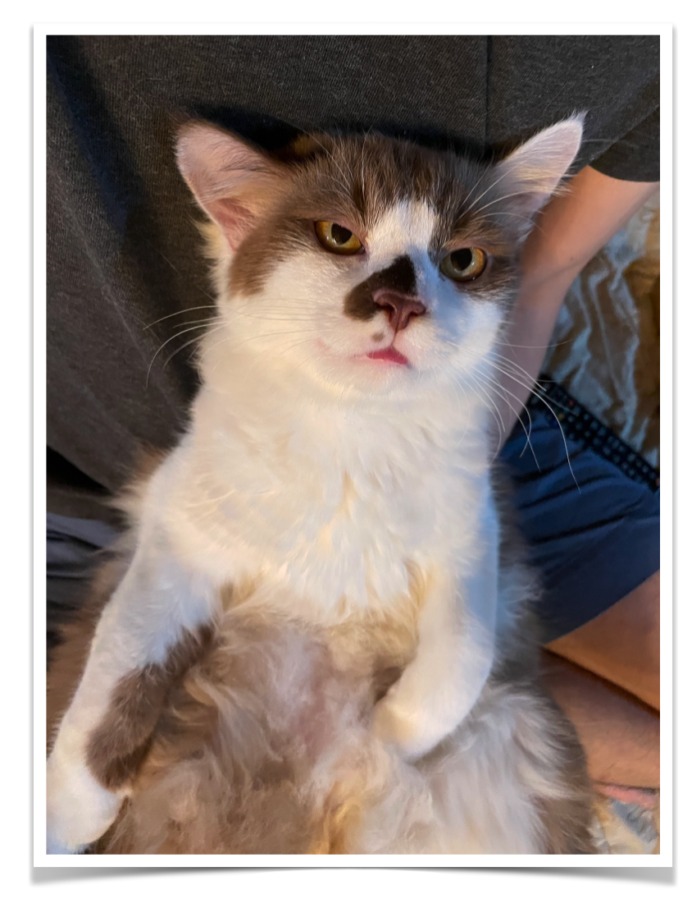

Instructor

ผศ.ดร.สิวะโชติ ศรีสุทธิยากร
อาจารย์ประจำภาควิชาวิจัยและจิตวิทยาการศึกษา คณะครุศาสตร์ จุฬาลงกรณ์มหาวิทยาลัย
KruRoo Co-Founder
DataKruRoo Founder
ความเชี่ยวชาญเฉพาะ
สถิติและวิทยาการข้อมูลทางการศึกษา
การพัฒนาทัศนภาพข้อมูลทางการศึกษา
การเรียนรู้ของเครื่องและการประยุกต์สำหรับการวิจัยทางการศึกษา
การจำลองแบบมอนติคาร์โล
สถิติวิเคราะห์แบบเบย์
R programming
ผลงานทางวิชาการ
Panidvadtana, P., Sujiva, S., & Srisuttiyakorn, S. (2021). A Comparison of the Accuracy of Multidimensional IRT equating methods for Mixed-Format Tests, Kasetsart Journal of Social Sciences, 42, 215-220. (Scopus)
สิวะโชติ ศรีสุทธิยากร. (2562). ความเหลื่อมล้ำทางการศึกษาและปัจจัยที่ส่งผล : การวิเคราะห์พหุระดับร่วมกับดัชนีเอ็นโทรปีนัยทั่วไปที่อิงมัธยฐาน. วารสารวิธีวิทยาการวิจัย. 32(3), 342-379. (TCI1)
วรรณี แกมเกตุ, ดวงกมล ไตรวิจิตรคุณ, สิวะโชติ ศรีสุทธิยากร, เมษา นวลศรี, กษิดิศ ครุฑางคะ และภานุวัฒน์ เข็มกลัด. (2562). รายงานการติดตามและประเมินผลการดำเนินงานตามแผนการศึกษาแห่งชาติ พ.ศ. 2560-2579 : ช่วงปี พ.ศ. 2560-2562. สำนักงานเลขาธิการสภาการศึกษา กระทรวงศึกษาธิการ.
กนิษฐ์ ศรีเคลือบ, สิวะโชติ ศรีสุทธิยากร และคณะ. (2562). รายงานผลการสำรวจการวิเคราะห์ความต้องการและความจำเป็นของนักเรียนทุนเสมอภาคในสถานการณ์การระบาดไวรัสโคโรนา (COVID-19). กองทุนเพื่อความเสมอภาคทางการศึกษา (กสศ.)
หนังสือ
สิวะโชติ ศรีสุทธิยากร. (2564). สถิติและวิทยาการข้อมูลทางการศึกษา : R สำหรับจัดระเบียบและจัดกระทำข้อมูล. กรุงเทพมหานคร : คณะครุศาสตร์ จุฬาลงกรณ์มหาวิทยาลัย. สืบค้นจาก https://m.chulabook.com/th/product-details/120204